Special Article
Special Article
Jaffna Monitor hellojaffnamonitor@gmail.com 67 A belief that is commonly prevalent amongst sections of society – usually with strong ethno- nationalistic leanings, is that a dominant and pure culture that was native to their country or community was influenced (or ‘polluted’/’diluted’) by extraneous influences over a long period, resulting in a less ‘purer’ or less ‘desirable’ version of the original culture to rule the day. Attempts to identify and distil out this ‘pure’ or ‘original’ culture then becomes the holy grail of these ethno-nationalistic purists and has formed the basis of many sectarian conflicts. Even the Sri-Lankan ‘ethnic’ conflict can be traced to the emergence of such forces - within the middle classes of the Sinhala and Tamil communities, during the late 19th through to the late 20th centuries. Such pursuits are usually futile as the reality in many countries – including Sri Lanka and India, is more complex than the simple linear narrative presented by such cultural purists. A study of the history of musical traditions provides a clear insight into this BY: Mahesan Nirmalan MBBS, MD, FRCA, PhD, FFICM Manchester, United Kingdom “What are we when stripped away from our cultural roots?…that is the question?” Special Article Part-2 “Nathaswara Osaiyile” (ehj];tu XirapNy): An ancient art form that defines a people

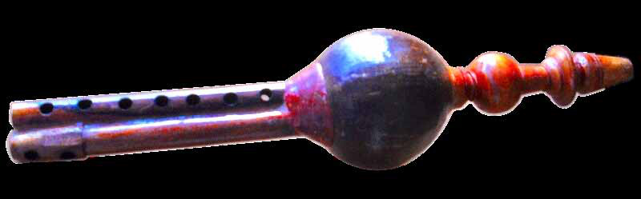
Jaffna Monitor hellojaffnamonitor@gmail.com 68 process of confluence of diverse influences. When one critically observes the popular narratives around the history of music, one clearly sees attempts to sanctify certain forms of music as ‘indigenous’, ‘pure’ or ‘divine’ and downgrade the position of other musical traditions to that of an extraneous ‘pollutant’. In South India and amongst Sri Lankan Tamils this categorisation is usually aligned along social (or caste) structures (T M Krishna, A Southern Music: The Carnatic Story and T M Krishna, Sebastian & Sons: A Brief History of Mrdangam Makers). The evolution of musical traditions however is one of corporation, cross-fertilisation and gradual evolution leading to new forms of music that are best described as the ‘joint heritage’ of all people living in these lands and sometimes across national borders. The history of nathaswaram/ thavil music in Sri Lanka – with its current dominant position in the cultural lives of Sri Lankan Tamils, is no exception. How and where did these instruments originate is therefore an interesting academic question.
The percussion instruments, crafted from domesticated animal-hide – usually goat, buffalo or cows, have been in widespread use amongst our early ancestors. Early South Indian and Sri Lankan literature refers to ‘Parai’, ‘Udukkai’, ‘Bera’ and ‘Mattalam’ as some of the instruments that have been in use (Jim Sykes, The Musical Gift: Sonic generosity in Post-war Sri Lanka) for centuries and these The ‘Udukkai’ as part of Hindu iconography representing the ‘nadam’ or the primal sound of creation. Image adapted from Wikimedia commons under the Creative Commons License Udukkai
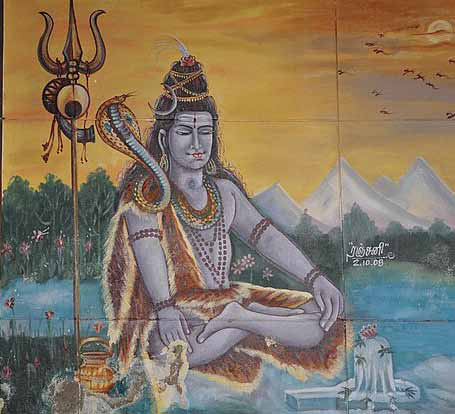
Jaffna Monitor hellojaffnamonitor@gmail.com 69 instruments most definitely predate the Thavil – the focus of the current series of articles. There is extensive reference to ‘Parai’ (giw) in the Sangam Literature (300 BC-300AD). The ‘Vedda’ (jeoaod or Ntlh;) communities – the aboriginal people of Sri Lanka, certainly used such percussion instruments and continue to do so to the present day (Jim Sykes, The Musical Gift: Sonic generosity in Post-war Sri Lanka). Some of these instruments – such as the Udukkai, have been part of the Hindu mythology and iconography from time immemorial and as such have received an aura of mysticism and/or divinity associated with them.
The ‘Udukkai’, ‘Parai’ (or the ‘Bera’) and
‘Mattalam’ are popular instruments to the
present day in the ‘Nattu-Koothu’ (ehl;L
$j;J) or ‘Koothu’ ($j;J) performances in
the Eastern province in Sri Lanka and beyond.
These instruments are also commonly used
in the Sinhala ‘Nadagam’ (or kdv.ï/ ehl;ba
ehlfk;) performances. Different adaptations
of these instruments are also used in temple
functions and other ritualistic performances
amongst the Sinhala speaking communities
– particularly those in the Sabaragamuwa,
coastal and Kandyan regions. There is an
emerging consensus amongst musicologists
that the tradition of ‘Koothu’ and folk singing
(ehl;L ghly;) is a distinct form of music
and dance native to this region, and predates
Carnatic or Hindustani music – both in Sri
Lanka and in South India, even though the
latter came to dominate the musical discourses
due to the dominant societal position of its
proponents. Despite the marginalisation
of these traditional instruments and the
artists who performed them (attributed to
the expansion of the Vijayanagara/Maratha
empires into South India and the consequent
subjugation of Tamil music and musicians),
there are currently some clear signs that
suggest the welcome resurgence of these art
forms within the Tamil community. Even
though it is hard to determine when the
transition took place, it is likely that the grand
‘Periya melam’ (ngupa Nksk;) or Thavil is
likely to have evolved from these early genre
of percussion instruments – ‘Parai’, ‘Udukkai’,
‘Bera’ and ‘Mattalam’, that were used widely
within nomadic musicians in South India/
Sri Lanka,. The early versions of Thavil were
made in Tanjavur and even to this day, the
Thavil makers of Tanjavur remain popular and
distinctive. The Thavil is a cylindrical structure
carved from a block of jackfruit wood. Layers
of animal hide - usually from the buffalo and
goat, are stretched over the two sides of the
hollow shell using different levels of tension on
each side. The tension may be altered further
by adjusting the position of the hoops of hemp
used to firmly attach the skin to the shell. The
diameter of one side is slightly larger than the
other and the combined differences in tension
and diameter enables pitch blending and
differences in the tone between the two sides.
One side of the drum is played with a short
stick made of hardened wood and the fingers
covered with special ‘thimble’ like structures
are used to play the other side of the thavil.
It is equally tempting to reflect on the possible
evolution of Nathaswaram over time. As there
are no written historic records, we are only
able to speculate as to how nathaswaram may
have evolved to its current shape and form.
Wind instruments are broadly based on the
principle of creating sounds by blowing into
a hollow pipe(s). The sound is produced by
blowing air directly across a sharp edge (or lip
plate) thus creating vibrations in the column
of air within the pipe. The flute and the piccolo
are examples where this method is deployed.
Alternatively, air blown in can be used to
create vibrations of a reed (a thin piece of
material) which then causes vibrations of the
air column held within a cylindrical object.
On the basis of how the sound is created,
wind instruments may be broadly classified
into non-reed instruments (Flute and piccolo)
Jaffna Monitor hellojaffnamonitor@gmail.com 70 or reed instruments (Clarinet, saxophone, oboe, bassoon and the nathaswaram). The reed based instruments may use a single reed (Saxophone, clarinet etc.), double reeds (oboe, bassoon, nathaswaram etc.) or even quadruple reeds (the Thai ‘pinai’ or the Arabic ‘pii’). Combining this basic structural information of reed based wind instruments and the ethno- social dynamics of nomadic musicians in India, it is possible to make some inferences on how the nathaswaram may have evolved into its current form. In this context, few other double reed instruments used by such nomadic groups in Central and South Asia become relevant. As no written records exist, any conclusions made in this respect are based on inferences rather than hard evidence, and as such, are best considered as a hypothesis rather than an established fact. 1. Pungi (or Mahudi – kFb): The Pungi is a musical instrument that originates from the Indian subcontinent where wind - blown into a hollow reservoir, is channelled into two cylindrical pipes, each containing a vibrating reed. This instrument has been used for centuries by snake charmers of North (Sindh and Rajasthan) and South India (Kerala, Tamil Nadu and Andra Pradesh in particular). Kuravars (wysl=ka;sl or Fwtu;) are an indigenous ethnic Tamil community whose roots can be traced to the Kurunji Hills. The Sangam literature refers to this community extensively with references to poets, saints and even gods (and goddesses) whose origins were traced to this community. Changing socio- economic conditions, accelerated during the Vijayanagara period (14th-17th century) and the subsequent colonial era reduced these – once thriving, communities to poverty and a nomadic life style with snake charming being one of the trades commonly adopted by its members. The Pungi (kFb) was used extensively for this purpose, and may be one of the earliest double reed musical instrument on record.
The structure and the way it is used/held in performance suggests that the modern grand nathaswaram may have had a more humble beginning amongst these communities. The popularity of compositions such as ‘Mahudi’ in the raga ‘Punnagavaraali’ (Gd;dftuhsp) - similar to melodies played by traditional snake charmers, at classical nathaswaram concerts to this day adds some credence to this claim. Furthermore, until recently the nathaswaram concerts also included the use of a separate drone pipe ($j;J Foy; or Cik Foy;), which was used to create a constant sound (pitch or Sruti- RUjp) for the concert, thus separating out the two pipes that were integrated within a single shell in the construction of the Pungi. These indirect evidences do suggest that the nathaswaram may in fact be a derivative resulting through a series of modifications made to the humble Pungi - however weak this claim may be, when seen through the eyes of modern scientific rigor. Figure 2: Pungi (or kFb): perhaps one of the oldest double reed instruments used within nomadic communities. Whereas one of the pipes was used to generate a constant drone-like sound, the other pipe – equipped with multiple holes, was used to generate varying tunes (Figure adapted from Wikimedia Commons, under the Creative Common License)
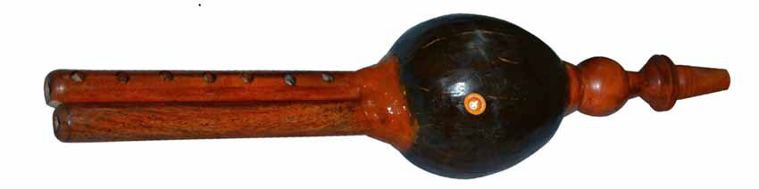
Jaffna Monitor hellojaffnamonitor@gmail.com 71 2. Shehnai: The Shehnai is a double reed instrument, which resembles a nathaswaram both in shape and the kind of sound produced. Like the Nathaswaram it is made of wood with a flared bell shaped end and is in widespread use in North India. Wikipedia claims (without providing any direct references) that the Shehnai “is thought to have been developed by improving upon the Pungi” (or kFb). Different versions of Shehnai-like instruments are in common use in Western India, Nepal and the state of Karnataka. In Sri Lanka too similar instruments – known as ‘Horanava’ in Sinhala and ‘Sornali’ in Tamil, have been used along with percussion instruments such as ‘Bera’, ‘Mattalam’ and ‘Parai’ in temple processions and in street plays (Jim Sykes, The Musical Gift: Sonic generosity in Post-war Sri Lanka). The term Shehnai is derived by combining two words from Persia (‘shah’ – meaning king; and ‘nai’ or ‘ney’ – meaning a wind instrument like the flute). This suggests that this instrument may have originated in or around Persia and may have been used in royal palaces, processions or ceremonies. It is equally tempting to speculate that similar Figure 3: A Pungi (or kFb) in use by a nomadic musician for snake charming. The fingers are applied to the shorted pipe used to create the melody, whereas the longer pipe produces the background drone like sound which produces the pitch (or Sruti- RUjp) (Figure adapted from Wikimedia under the Creative Commons Licence) Figure 4A: Shehnai: A double reed wind instrument currently in common use both in India and in Sri Lanka (Figure adapted from Wikimedia Commons, under the Creative Commons Licence)
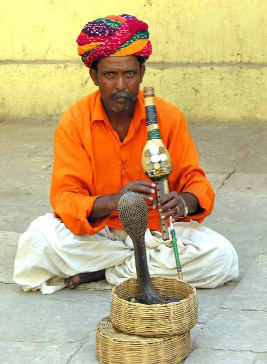
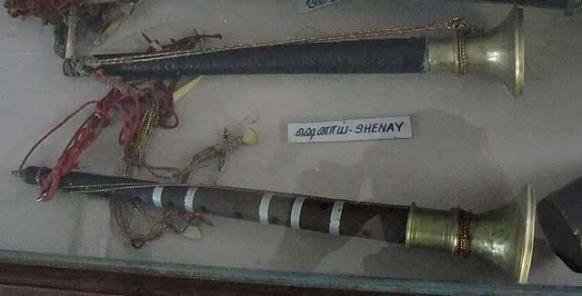
Jaffna Monitor hellojaffnamonitor@gmail.com 72 musical traditions may have been introduced into the Indian subcontinent at some time point, over the very long period of historical connections between India and Central Asia. These connections range from the early Indo- Aryan migration over 1800 years ago through the extensive trade links between Arabia/ Persia and India culminating in the Mughal invasion between the 10th-16th centuries. When in this very long time period did Persian musical instruments became part of the musical landscape in India is hard to determine and is beyond the scope of this article. Whenever it may have occurred, it found a receptive audience – already familiar with reed instruments such as the Pungi, who then may have adapted it further to suit their own tastes and desires.
-
Zurna: The Shehnai itself may have been derived from another similar instrument called the Zurna which is used across central and west Asia. Wikipedia comments that images of Zurna are visible in artwork by the Indo-European people living in West Asia during the bronze-age. It is also a double reed instrument usually accompanied by a bass drum in Armenian, Anatolian and Assyrian folk music. The Zurna was known in Persia from the 6th century and spread beyond Persia following the spread of Islam and the Ottoman Empire. The long and conical wind instrument – Karna, that was made around 500BC and currently kept in the Persepolis museum in Iran broadly has many structural similarities to Zurna and may represent its early beginnings.
-
The stone Nathaswarams of South India: Whilst the modern nathaswarams are made of wood, there are two unique instruments that are made of granite stone. These two specimens are kept as unique treasures at the Kumbeshwarar temple in Kumbakonam Figure 4B: A Tribal Shehnai player. Note the similarities with the Nathaswaram in how it is used in practice. Figure adapted from Wikimedia Commons, under the Creative Commons Licence)
Jaffna Monitor hellojaffnamonitor@gmail.com 73 (Mjp Fk;Ng];tuu; Nfhtpy; Fk;gNfhzk;) district, Tamil Nadu and at the Aathinathar Aalvar Temple (Mjpehju; Mo;thu; Nfhtpy;) in the Thoothukudi (J}j;Jf;Fb) district in Tamil Nadu, India. Whilst such instruments are rarely used for actual performances, their existence is important in the teleological understanding of the modern day nathaswaram. (P Saravanan, Dinamani 22/10/2018). Both instruments are estimated to be several centuries old (they have not been formally dated by carbon dating), weigh almost 6 times the weight of their modern and longer counterparts. The instruments are however significantly shorter (approximately 2 feet long) closely resembling the Shehnai described above (Figure 4A). These stone nathaswarams are less versatile than their wooden counterparts as they are harder to blow through and in general only 6 (of the usual 7) notes are playable in this instrument. As such some of the classical ragas such as
A
B Figure 5: A: The Zurna and B: Gypsy musicians performing the Zurna at a wedding in 1930’s. Figures adapted from Wikimedia under the Creative Commons License Karna- an ancient Persian musical instrument, made around 500 BC. Figure adapted from Wikimedia under the Creative Commons License.
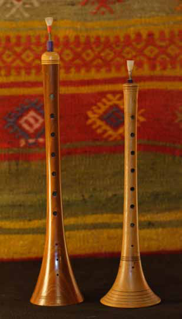
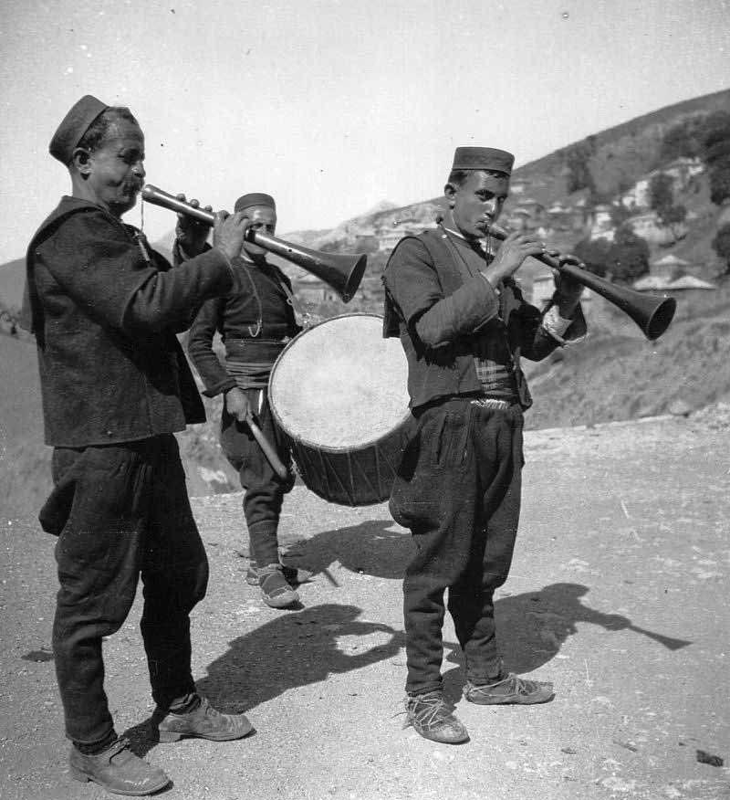
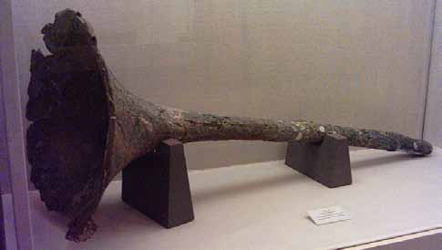
Jaffna Monitor hellojaffnamonitor@gmail.com 74 ‘Shankarabaranam’ (rq;fuhguzk;), ‘Karaharapriya’ (fu`ug;upah) and Thodi (Njhb) are unplayable in the stone nathaswaram. (P Saravanan. Dinamani 22/10/2018). This limited versatility may have driven the local artists and nadaswaram makers to start using hardened wood instead of stone. This attempt to place the stone nathaswaram as a teleological precursor of the wood nathaswaram is admittedly a speculation of the author at this stage. The definitive proof can only come from future research that can provide more accurate dating of the few remaining stone nathaswarams.
The above sections provides the musical background,
or the mileu within which the modern nathaswaram
has evolved and thrived. It is hard if not impossible
to suggest a direct linear connection between these
different instruments. It is however clear, that
the creativity and the ingenuity of the individual
musicians and the desire/need to adapt their musical
performances to suit the taste and preferences of their
audience drove these changes. T N Rajaratnam Pillai’s
efforts in lengthening the length of the middle portion
of the ‘Thimri’ nathaswaram to produce the modern
‘Bari’ nathaswaram referred to in Part 1 (Figure
8) is the kind of creativity that have driven these
adaptations (Jaffna Monitor, 15th December 2014).
In this gradual transformation, both the performing
artists and the makers of these instruments have
played a critical role.
To be continued in the next edition.
The stone nathaswaram of Kumbakonam:
In size and structure this has a close
resemblance to the Shenhai, strongly
suggesting a common origin or that one
may have been derived from the other.
For this reason, it is commonly believed
(by several contemporary nathaswaram
vidwans) that the nathaswaram may have
developed through suitable adaptations
to the shenhai (Image Adapted from The
Hindu, 02/10/2017)
The Thimiri (shorter and higher pitched) and Bari
(longer and lower pitched) Nathaswarams – the final step
in the evolution of the modern day nathaswaram. This
development was first pioneered by T N Rajaratnam Pillai,
along with the nathaswaram maker Ranganathan Achari
from Narasingapettai, Kumbakonam, Tamil Nadu (See
Part 1, Jaffna Monitor 15th December 2024)
Bari Nathaswaram
Thimiri Nathaswaram
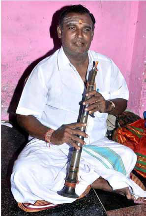
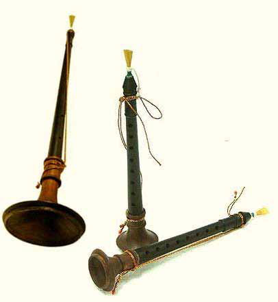
Jaffna Monitor
hellojaffnamonitor@gmail.com
75
Story
“olaiyai vettuvathum kaththithānā! intha
[Is it the knife that cuts the leaf! Does this]
overseer solluvathum puththithānā?
[overseer speak words of wisdom?]
kaththarikkāy vettuvathum kaththithānā! inthak [Is it the knife that cuts the eggplant? Does this]
kangāniyār solluvathum puththithānā?
[foreman speak words of wisdom?]
pudalangay vettuvathum kaththithānā?”
[Is it the knife that cuts the snake gourd?]
“Vayiravanathā… … … Vayirava nathā… … … get down dear.”
“olaiyai vettuvathum kaththithānā?”
The Chariot Hangar
Translated from the original Tamil short
story iruppiṭam (,Ug;gplk;) from the
1964 collection of short stories titled
akkā (mf;fh) by A. Muttulingam.
Translated by:
Eḻuttukkiṉiyavaṉ
(vOj;Jf;fpdpatd;)
Jaffna Monitor
hellojaffnamonitor@gmail.com
76
“Listen to me child… … get down … mmm
… āah”
She kept shouting. The rice and gravy that she
had been mixing on the plate stayed put.
Whether he was conscious of eating or not, he
seemed to ignore his mother.
He was standing on top of the mortar. Holding
a large handle-less sickle in his hand, he was
swaying back and forth to the beat of his song.
Occasionally when the mortar wobbled, she
was startled, afraid that he might topple over;
but he kept on singing nonchalantly.
Whenever he felt like eating, he bent down
and opened his mouth.
She was then supposed to feed him a ball of
rice.
He would then resume his singing.
“olaiyai vettuvathum kaththithānā! intha
overseer solluvathum puththithānā?”
Every day this ritual would last for at least
three hours. But the mother never seemed to
grow tired of it.
Unlike the others, the mother couldn’t accept
him as a complete retard. She was her only
son; darling son; a dear son without even a
blemish in his intellect.
But he did not appear to have developed
the intellect to comprehend the differences
among his mother, his house, and the world.
He trusted that when he was hungry, his
mother would feed him. He thought about
nothing beyond this. He had neither need nor
compulsion to think beyond that simple want.
He had the physique of a seventeen- or
eighteen-year-old, with an unsightly protrusion
for a belly; but his hairless face was that of a
ten year old.
When he was still at school, she took him to
school every morning. Then she waited the
whole day until three in the afternoon, when
school ended, to take him home, carefully
covering his head with the free end of her sāri.
But his education only lasted from
kindergarten to fourth grade.
His brain developed to the point where he
could look at a picture and call out “R-O-O-S-
T-E-R - Chicken!”. One day he said.
“Kandhaiyā vāththiyār [Kandhaiyā teacher]
kindhaiyā vāththiyār
[Kindhaiyā teacher]
kaḷḷukku mēḷē
[on top of a rock]
kundhaiya vāththiyār.”
[squat yourself
down, Teacher.] and ran away from the school. With that perhaps Sellamma, too, was content with the completion of her son’s schooling. 2 It was around one in the afternoon. I was going home for lunch. “Here, ammā… …” “edi Sellammā… … come over here; Can’t you see that the teacher is passing by… … … tie my vēṭṭi will you?” It was only then I noticed him. Fresh from a shower, he stood tall. His mother must have gone inside to fetch a vēṭṭi.
Jaffna Monitor hellojaffnamonitor@gmail.com 77 “Teacher! Did the bell for the bread-break already ring… …?” I nodded in agreement. His mind didn’t mature like his body did. Still, he had the sense to realize that he should not stand naked before the teacher. Does he not have the ability to do anything on his own? My mind was struggling hard to separate the soul of Sellamma that was intertwined with the body of Vayiravanāthan. “edi… Sellamma… you devil, bring the vēṭṭi… Teacher is looking….” I walked on slowly. I couldn’t dismiss him as a crazy person. I have seen with my own eyes when he acted with a rare sagacity that would astonish anyone. I also sensed a strange, rare magnetism tinged with fear that held one back from scolding him.
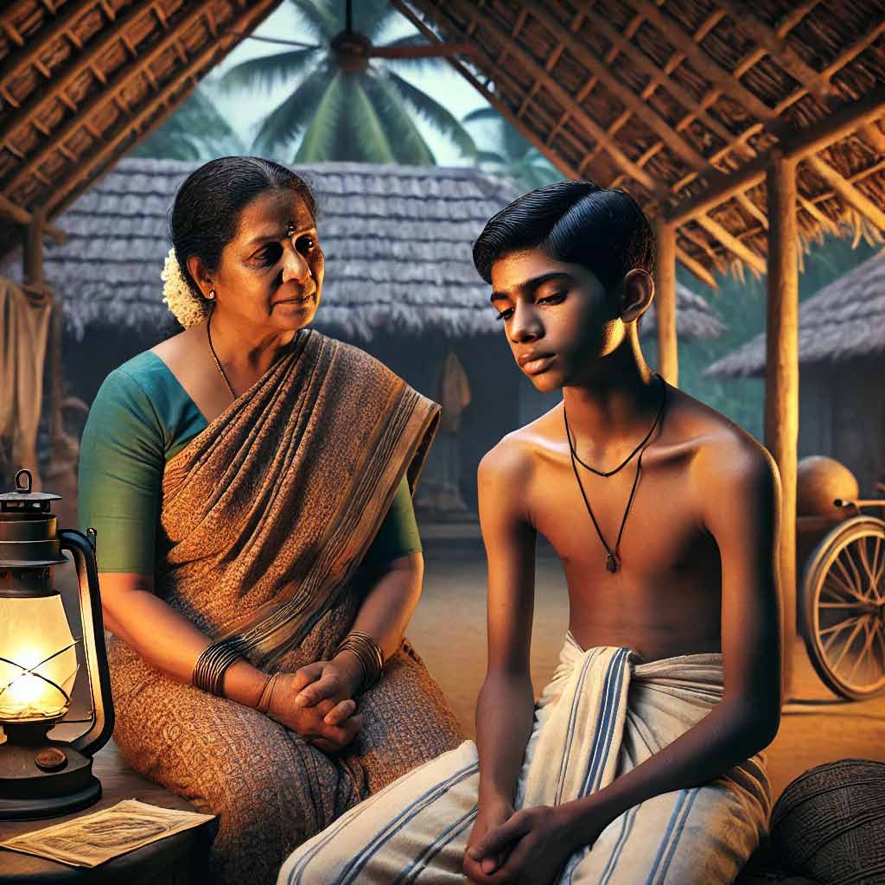
Jaffna Monitor hellojaffnamonitor@gmail.com 78 Nevertheless, I felt that some deep flaw trumped everything else. 3 Whenever a temple festival came along, his excitement knew no bounds. On New Year’s Day, goddess ammaṉ will leave on a procession as is customary. She would sit majestically on the red wooden horse perched on a wheeled cart, as the procession proceeded along the rough Nanthāvil lane. That was a sight to behold! By the time the deity returned to the temple, it would be two or three in the morning. He would sit nonchalantly in a corner on the cart, feet dangling, holding up an oil torch. One can envision the scene: an old silk vēṭṭi wrapped around his hip, held tightly in place by a red piece of cloth, his bare body generously dabbed with sandalwood paste, and his mouth frequently barking out commands. As the cart stumbled over potholes, causing alarm among onlookers who feared that he might topple over, he would casually use his hip cloth to wipe the oil dripping down to his elbow, and order people around without a care in the world: “Ah… Rathiṉaṇṇai… … pour me some more oil.” He would await the dawn with a frightening display of patience without catching even a wink. When one saw him in this situation, one wondered if he didn’t even have the awareness to be scared. Not just temple festivals, he would show up uninvited to any wedding or funeral, too. Someone would say “Vayiravanathā… arrange these betel leaves on the platter”. Without fatigue or displeasure, he would sit cross-legged and patiently arrange thousands
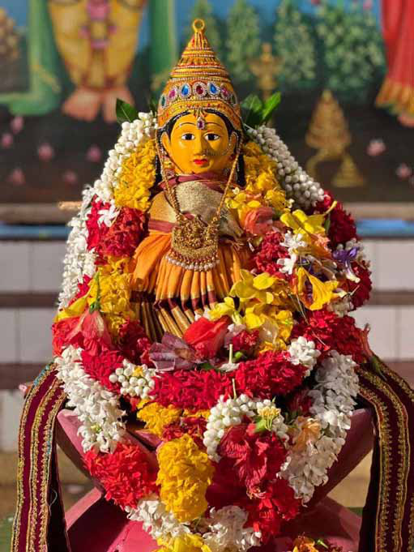
Jaffna Monitor hellojaffnamonitor@gmail.com 79 of betel leaves on platters. It would never occur to him to display any sign of discontent. I would regard him in awe. 4 They had closed the school after midday for the chariot festival at the Mañjavaṉappathi temple. People thronged from near and far to see the giant chariot that was the pride of Kokuvil. It was scorching, around two in the afternoon. As usual, the chariot had come to a halt amidst the multitudes of people, in the corner of the northern path around the temple. I straightened my back to regard the chariot. It stood tall, like a giant motionless mountain, among the suffocating flood of tiny people. It had arrived there at ten in the morning but thereafter had refused to budge even an inch. The more people tried to pull the rope to cajole it to move, the more its wheels sank into the ground. People milled around the chariot. No one had any strength left in their bodies nor in their hearts. Everyone was fasting for the festival, so hunger was gnawing at them. “Arōkarā!” “To Mañjavaṉappathi Murukaṉ!” “Arōkarā!” As the countless people cheered on, the chariot would tantalize by appearing to budge a tiny bit, its brass bells jingling. It felt as if Murukaṉ was laughing aloud at us … But the chariot did not budge. All efforts were futile.
Jaffna Monitor hellojaffnamonitor@gmail.com 80 People started to whisper, “did someone commit some grave sin to anger God?” Others pleaded at Murukaṉ’s feet, calling out his name. Only then did I notice him. Amidst the thousands of jaded, exhausted people he stood apart, radiating a rare enthusiasm without any sign of tiredness. That same old vēṭṭi, and the red cloth tied around it, and a chest daubed with sandalwood paste. “Arōkarā…. Mmm… To Mañjavaṉappathi Murukaṉ..” “Arōkarā” “Mmmm… Kandhaiyā aṇṇai… give me a hand … Arōkarā.” He was pacing up and down, cheering people on. When everyone else was downcast, having lost all hope, he was still smiling. Is he not tired? Does he not comprehend that a difficult job is indeed difficult? The sun had started its descent. Whatever little hope that remained had started to fade. One by one, people dropped the chariot rope and sat on their haunches. No one had any ideas on how to remedy the situation. The chariot needs to reach its hangar. Someone would touch the chariot rope, only to drop it the next moment, and go back to squatting. Old Kathirkāmathāchchi who was carrying a pot of burning camphor, went into a trance and squealed, “Murukaṉ demands a sacrifice, Murukaṉ demands a sacrifice.” I glanced down. There were already three pumpkins smeared with vermilion powder and cut in half. “Perhaps if someone fetches a tractor from Iṇuvil … … we can haul the chariot …” “What!” The very thought struck everyone as disgusting and disgraceful. How could one even contemplate getting a tractor to drag Murukaṉ’s chariot, which ought to be dragged by an outpouring of devotion? “Kandhaiyā aṇṇai you take the wheel chock away, let’s give it one more try.” “You madman… stand aside.” Kandhaiyā aṇṇai felt a surge of anger. “You are trying to teach me, are you?” I examined Vayiravanāthan’s face closely. There was no sign of hatred whatsoever. It was as if he didn’t even hear Kandhaiyā aṇṇai’s harsh words. He stood there wearing the same enthusiasm and smile. People jostled to get a handhold on the chariot rope. “Arōkarā” “Teacher… … mmm… … give us a hand.”
Jaffna Monitor hellojaffnamonitor@gmail.com 81 It was said with a charm that precluded any possibility of disagreement. I wrapped my sālvai around my waist and obeyed him. “Arōkarā” Eyes closed on their own. All of us focussed our hearts and expended every last ounce of energy to pull the chariot. “To Murukaṉ” “Arōkarā” “To Mañjavaṉappathi Murukaṉ” “Arōkarā” The chariot relented and sped forward with sudden enthusiasm. At that moment, no one knew where we were heading. Suddenly, something happened … Everyone dropped the chariot rope and sprinted in the opposite direction. I did, too. In the hot sand, he lay on his stomach in a pool of blood, bleeding from his mouth and nose. His right hand tightly clutched the sand. When I crawled into the melee and looked over the heads of people with great difficulty, his left leg and arm were palpitating. Thereafter he lay motionless. 4 I walk with my eyes fixated firmly on the tarred road surface. People bustle this way and that. “It seems the chariot has reached its hangar.” My head, on its own, nods in agreement! – Everything that begins a journey must reach its hangar, after all. – But is reaching the hangar the important thing? How one reaches the destination is indeed important, is it not? Kathirkamathāchchi’s deranged look flashes into my mind’s eye. My mind weighs heavily. – Teacher, why do you stand there staring. Give us a hand. He stands there smiling. On his face, that same charm blended with fear. A charm that makes it impossible to decline the request. “Teacher, who is it that died?” I open my mouth to reply. But my words stay pent up within my chest. Someone behind me responds. “It was some mad boy.” I keep walking, lifting my vēṭṭi slightly to avoid tripping over it. The gravel beneath my bare feet rekindles my pain.